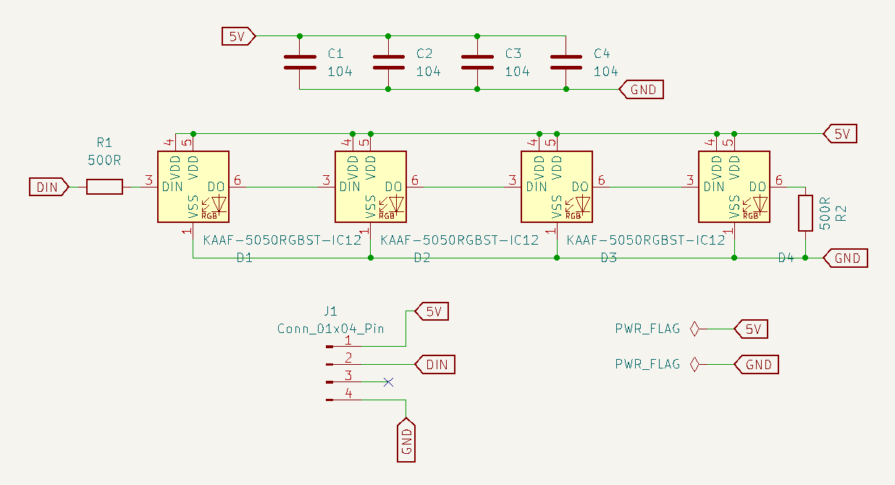
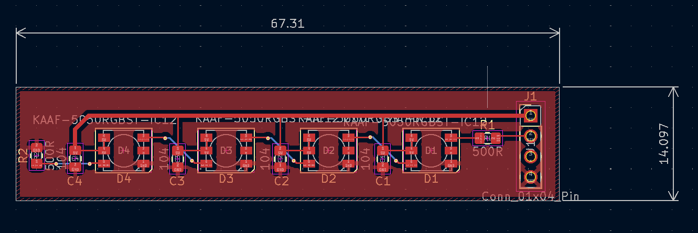
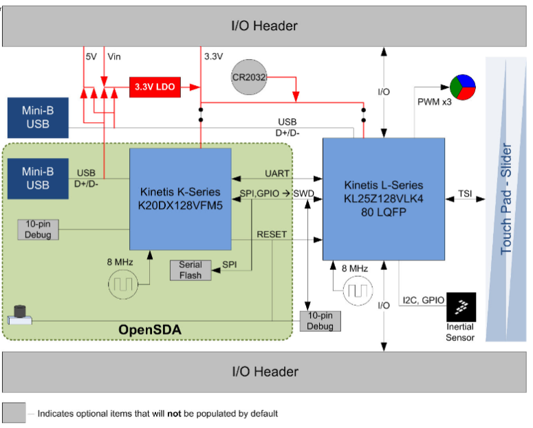
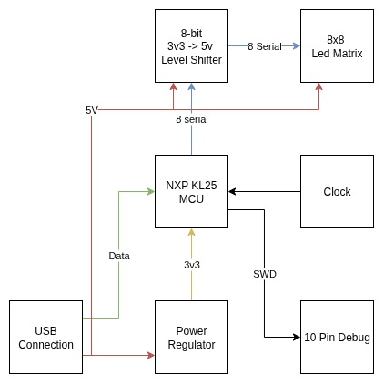

LED Array
Requirements
The plan is to make a 8x8 (64) addressable LED array that can be controlled
over usb. The following funcionalities are required
- The board should be powered by a USB-C connection from a Laptop
- Each individual LED should be addressable.
- The user should be able to write to the array in frames.
Prototype LED Strip
As an initial starting point I designed a small board to test some addressable
leds to get an initial idea of how the LEDS work. I decided on the KAAF-5050RGBST-IC12 addressable LED and
designed a small prototype based on the application circuit.
Board Schematic

Board PCB

Initial Board Idea
I decided upon the NXP KL25x series of microcontrollers to be the brains of the project, the MCU uses a
32-bit ARM-CortexM0 core and is 32 bit. The mcu was chosen as it fulfills the basic requirements of the
project and it an affordable choice. I also chose
this chip as I wanted to explore resource constrained systems.

Looking at the FRDM-KL25x schematics it appears that the MCU circuit contains the follwowing parts;
- Crystal
- 3v3 Voltage Regulator
- 10-pin Debug Connector
Alongside this according to the datahseet the LEDs have a supply voltage, \(V_{DD}\), of \(5V\) with an input
voltage \(V_{I}\) of \(-0.5\leq V_I \leq V_{DD}+0.5\), so I felt that a level shifter is required to shift the
GPIO from 3v3 to 5v, looking online I found an 8-bit level shifter which shifts all 8 inputs up. Flashing will
be done using a 10 pin debug header for JTAG.
